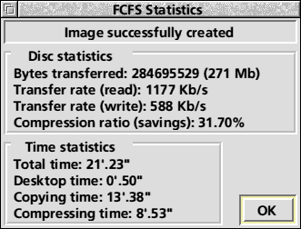

| FCFS: Multitasking operations |
You can use the timeslice icon to change the time (in centi-seconds) that FCFS will use to read/write to the disc/image before it gives the control back to the other tasks (ie high value means faster image making/restoring but slow desktop operations). Values between 5 and 25 are recommended.
While the image is being made or restored a window will appear which shows the progress so far and allows the options of pausing and aborting the operation.

When the operation has finished this window will display statistics about transfer rates, compression ratios etc.
If you selected a non-multitasking operation then Escape will abort it.
Before creating an image, if the Multitask option is set, FCFS will try to lock the disc to avoid changes being made to it during the copying process. If there are files open for writing, FCFS can't lock the disc and will ask you if you want to continue or abort the operation. If you choose to continue, remember that you should avoid writing to or modifying the disc in any way, otherwise the image will probably be corrupted. If the locking operation succeeds you can read the disc as usual but you can't create, delete or modify any files. The disc will be unlocked when FCFS has finished.